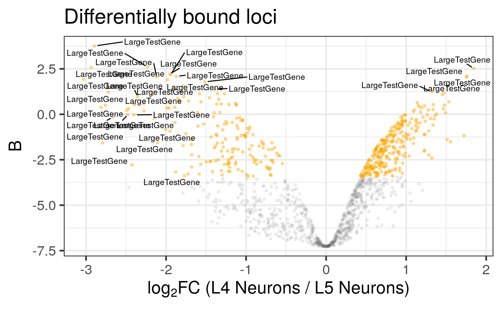
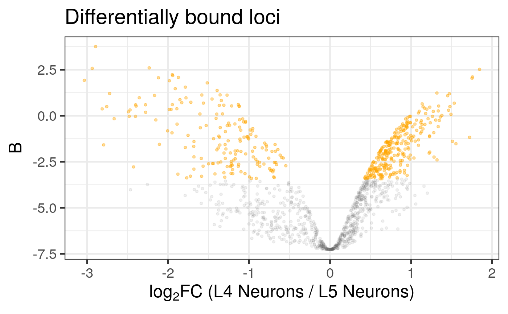

Plots a volcano plot with optional layered highlights and overlays, given the results from `differential_binding()` or `differential_analysis()`.
Arguments
- diff_results
A `DamIDResults` object, as returned by `differential_binding()` or `differential_accessibility()`.
- plot_config
List. Names to override plot details (title, axes, size, colours, etc); see details.
title,xlab,ylab(character)ystat(character): The column name from `diff_results@analysis` to use for the y-axis (e.g., "minuslogp" or "B"). Default is "B".base_size(integer): ggplot theme base font size.sig_colour,nonsig_colour(colours)sig_alpha,sig_size: alpha and size for significant points.nonsig_alpha,nonsig_size: alpha and size for non-significant points.
- label_config
List. Fine-grained label controls; if missing or `NULL`, no labels are added (see details).
genes: character vector to restrict labels to a subset (default: label all significant).label_size: label size (numeric).clean_names: logical; if `TRUE`, applies regex filtering to labels.names_clean,names_clean_extra: regex to exclude from labels whenclean_namesis `TRUE`.max_overlaps: integer; maximum ggrepel overlaps.
- highlight
List. A simple list where each element is a character vector of genes/loci to highlight. Each element of this list will correspond to a separate highlight group. If `NULL`, no highlight overlays are drawn.
- highlight_config
List. Additional highlight configuration options, applied consistently across all highlight groups. If missing or `NULL`, defaults are used.
alpha: Numeric; transparency for highlight points (default: 1).size: Numeric; size for highlight points (default: 2).label: Logical; if `TRUE`, labels are added for all highlight groups (default: `FALSE`).colour: A list of colours, where each element corresponds to a highlight group in the `highlight` list. If not specified or not enough colours are provided, a default hue palette is used.label_size: Numeric; label size (default: 4).max_overlaps: Integer; maximum ggrepel overlaps for highlight labels (default: 10).
- save
List or `NULL`. Controls saving the plot to a file. If `NULL`, `FALSE`, or `0`, the plot is not saved. If a `list`, it specifies saving parameters:
filename(character): The path and base name for the output file (e.g., "my_volcano_plot"). If not specified, a default is used.format(character): File format ("pdf", "svg", or "png"). Default is "pdf".width(numeric): Width of the plot in inches. Default is 5.height(numeric): Height of the plot in inches. Default is 4.
Examples
# Helper function to create a sample DamIDResults object
.generate_example_results <- function() {
mock_genes_gr <- GenomicRanges::GRanges(
seqnames = S4Vectors::Rle("2L", 7),
ranges = IRanges::IRanges(
start = c(1000, 2000, 3000, 5000, 6000, 7000, 8000),
end = c(1500, 2500, 3500, 5500, 6500, 7500, 20000000)
),
gene_id = c("FBgn001", "FBgn002", "FBgn003", "FBgn004", "FBgn005", "FBgn006", "FBgn007"),
gene_name = c("ap", "dpr1", "side", "mav", "geneE", "geneF", "LargeTestGene")
)
data_dir <- system.file("extdata", package = "damidBind")
loaded_data <- load_data_peaks(
binding_profiles_path = data_dir,
peaks_path = data_dir,
ensdb_genes = mock_genes_gr,
quantile_norm = TRUE
)
diff_results <- differential_binding(
loaded_data,
cond = c("L4", "L5"),
cond_names = c("L4 Neurons", "L5 Neurons")
)
return(diff_results)
}
diff_results <- .generate_example_results()
#> Locating binding profile files
#> Building binding profile dataframe from input files ...
#> - Loaded: Bsh_Dam_L4_r1-ext300-vs-Dam.kde-norm
#> - Loaded: Bsh_Dam_L4_r2-ext300-vs-Dam.kde-norm
#> - Loaded: Bsh_Dam_L5_r1-ext300-vs-Dam.kde-norm
#> - Loaded: Bsh_Dam_L5_r2-ext300-vs-Dam.kde-norm
#> Applying quantile normalisation
#> Locating peak files
#> Calculating occupancy over peaks
#> Calculating average occupancy per region ...
#> Differential analysis setup:
#> Condition 1: 'L4' (display as 'L4 Neurons')
#> Found 2 replicates:
#> Bsh_Dam_L4_r1-ext300-vs-Dam.kde-norm_qnorm
#> Bsh_Dam_L4_r2-ext300-vs-Dam.kde-norm_qnorm
#> Condition 2: 'L5' (display as 'L5 Neurons')
#> Found 2 replicates:
#> Bsh_Dam_L5_r1-ext300-vs-Dam.kde-norm_qnorm
#> Bsh_Dam_L5_r2-ext300-vs-Dam.kde-norm_qnorm
#> limma contrasts: L4-L5
#>
#> 277 loci enriched in L4 Neurons
#> Highest-ranked genes:
#> LargeTestGene, LargeTestGene, LargeTestGene, LargeTestGene, LargeTestGene, LargeTestGene, LargeTestGene, LargeTestGene, LargeTestGene, LargeTestGene
#>
#> 173 loci enriched in L5 Neurons
#> Highest-ranked genes:
#> LargeTestGene, LargeTestGene, LargeTestGene, LargeTestGene, LargeTestGene, LargeTestGene, LargeTestGene, LargeTestGene, LargeTestGene, LargeTestGene
# Generate a default volcano plot
plot_volcano(diff_results)
#> Warning: ggrepel: 354 unlabeled data points (too many overlaps). Consider increasing max.overlaps

# Generate a plot with a highlighted gene group, but no other labels
L4_genes_to_highlight <- c("ap", "dpr1", "side", "mav")
plot_volcano(
diff_results,
label_config = NULL,
highlight = list("Key L4 Genes" = L4_genes_to_highlight)
)
